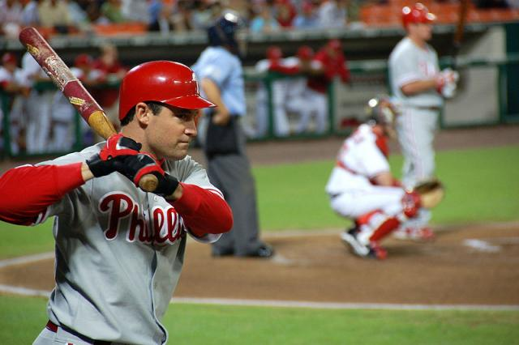

Tão antigos quanto o homem, os esportes são uma das invenções mais benéficas do homem. Além de manter o corpo saudável, ainda auxiliam na criação de uma série de comportamentos positivos, como a humildade, a união, a empatia, dentre outros.
E os esportes com bola são, sem nenhuma dúvida, os mais populares. Mas você sabe a diferença entre alguns deles? É justamente isso que descobriremos abaixo.
| Esporte | Origem | Ambiente | Objetivo | Equipe | ||
|---|---|---|---|---|---|---|
| 1 |  | Baseball | 1971, EUA | Campo com 1/4 de círculo, de 92 a 108,2m de raio | Realizar o maior número de corridas | Nove jogadores em cada time |
| 2 | |
Beach Soccer | 1930, Brasil | Quadra de areia com 35 ou 37m x 26 ou 27 de largura. | Realizar gols no campo do adversário | Cinco jogadores em cada time |
| 3 | |
Biribol | 1968, Brasil | Piscina com 4 x 8 x 1,3m | Derrubar a bola na quadra adversária. | Dois a quatro jogadores do time |
| 4 | Frescobol | Brasil, 1946 | Ao ar livre | Manter a bola no ar pelo maior tempo possível. | Geralmente um contra um |
Saiba mais clicando aqui